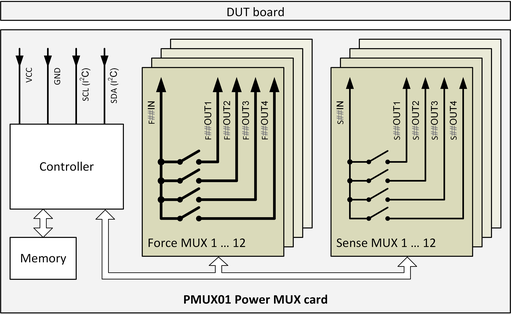
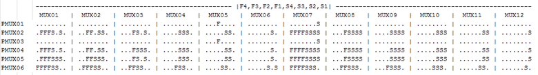

rdi.route().showPmuxStatus()
Reads the actual switch status of all available PMUX cards and displays the status in the UI report window.
Usage of the function:
- The function can be called only in the code‑based mode. For more information, refer to Execution mode in topic SmartRDI.
- The function displays suitable results in both online mode and offline mode.
Switch states of PMUX01

The shown switch states of PMUX01 cards are
grouped per combination of force MUX and sense MUX as follows:
- The sequence from left to right is F##OUT4, ...3, ...2, ...1, S##OUT4, ...3, ...2, ...1
- Closed force switches are shown as "F".
- Closed sense switches are shown as "S".
- Open switches are shown as ".".
Syntax
routeGroup& showPmuxStatus();
- List of parameters
- There are no parameters.
- Return value
- A reference to the routeGroup object.
Examples
Example 1
RDI_INIT();
...
...
ON_FIRST_INVOCATION_BEGIN();
{
...
...
rdi.route().showPmuxStatus().execute();
...
...
RDI_BEGIN();
{
...
...
}
RDI_END();
...
...
}
ON_FIRST_INVOCATION_END();
...
...
The code above results in the following output:

Example 2
Redirecting the output to a
string
stringstream ss; cout.rdbuf(ss.rdbuf()); // redirect cout's output through its stream buffer rdi.route().showPmuxStatus().execute(); cout<<"showPmux::::::"<< ss.str()<<endl; // use the new string as showPmuxStatus() output cout.rdbuf(cerr.rdbuf()); // redirect the output back
Functional changes
- Introduced in SmartRDI 2.5.0